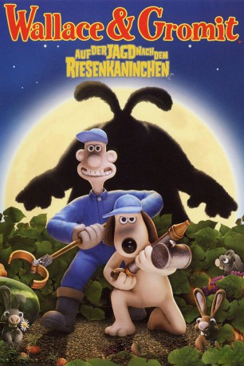

#1326 Wallace & Gromit - Auf der Jagd nach dem Riesenkaninchen
Alternativ: The Curse of the Were-Rabbit
Auszeichnungen: 1 Oscars gewonnen 1 BAFTA-Awards gewonnen
 
 IMDB-Wertung: 7.5 / 10
IMDB-Wertung: 7.5 / 10  Metascore: 87
Metascore: 87 
Jetzt ist das skurrile Duo endlich zurück. Wallace - zerstreuter Erfinder und Käsefreund, der für ein Stück seiner Lieblingssorte Wenslydale alles um sich vergisst, und sein vierbeiniger Freund Gromit, der ständig dafür sorgen muss, dass nichts außer Kontrolle gerät, jagen ein furchtbares Ungeheuer. Nacht für Nacht verschwinden die schönsten Gewächse aus den Gemüsebeeten der Stadt. Das ist umso schlimmer, weil die prächtigsten Gartenfrüchte doch beim jährlichen Gemüsewettbewerb prämiert werden sollen. Die Jagd auf das diebische Monster beginnt...
Jahr: 2005
Dauer: 85 Minuten
FSK: 6
Land: England Studio: UIPTonspuren:
Untertitel: Deutsch,
Auflösung: 1080p (1920x1088) Größe: 10547 MB
Genre: Animation/Trick, Abenteuer, Komödie, Familie, Fantasy, Mystery, Sci-Fi
Regisseur: Steve Box,  Nick Park
Nick Park
Drehbuch: Steve Box, Nick Park, Mark Burton, Bob Baker, Nick Park
Soundtrack: Julian Nott
Darsteller:
- Peter Sallis als Wallace / Hutch
 Ralph Fiennes als Victor Quartermaine
Ralph Fiennes als Victor Quartermaine Helena Bonham Carter als Lady Campanula Tottington
Helena Bonham Carter als Lady Campanula Tottington- Peter Kay als PC Mackintosh
- Nicholas Smith als Reverend Clement Hedges
- John Thomson als Mr. Windfall
 Mark Gatiss als Miss Blight
Mark Gatiss als Miss Blight- Geraldine McEwan als Miss Thripp
 Christopher Fairbank als Additional Voice
Christopher Fairbank als Additional Voice- James Mather als Additional Voice
 Liz Smith als Mrs. Mulch
Liz Smith als Mrs. Mulch- Vincent Ebrahim als Mr. Caliche
- Edward Kelsey als Mr. Growbag
- Dicken Ashworth als Mr. Mulch
- Robert Horvath als Mr. Dibber
- Pete Atkin als Mr. Crock
- Noni Lewis als Mrs. Girdling
- Ben Whitehead als Mr. Leaching
- William Vanderpuye als Additional Voice
Datei: X:\Kinder Collections\Wallace & Gromit\Wallace & Gromit - Auf der Jagd nach dem Riesenkaninchen (2005, FSK6, 1920x1088).mkv seit 22.06.2015
Festplatte: Kinder-Filme+Trick
 Es gibt insgesamt 10 Filme in der Gruppe 'Kinder Collections\Wallace & Gromit'
Es gibt insgesamt 10 Filme in der Gruppe 'Kinder Collections\Wallace & Gromit'